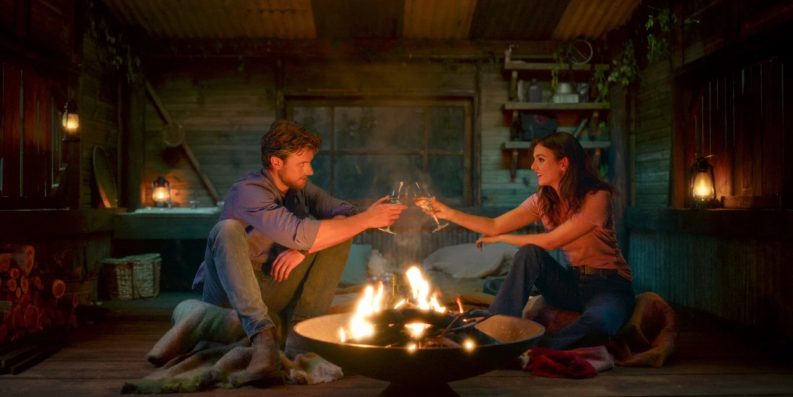
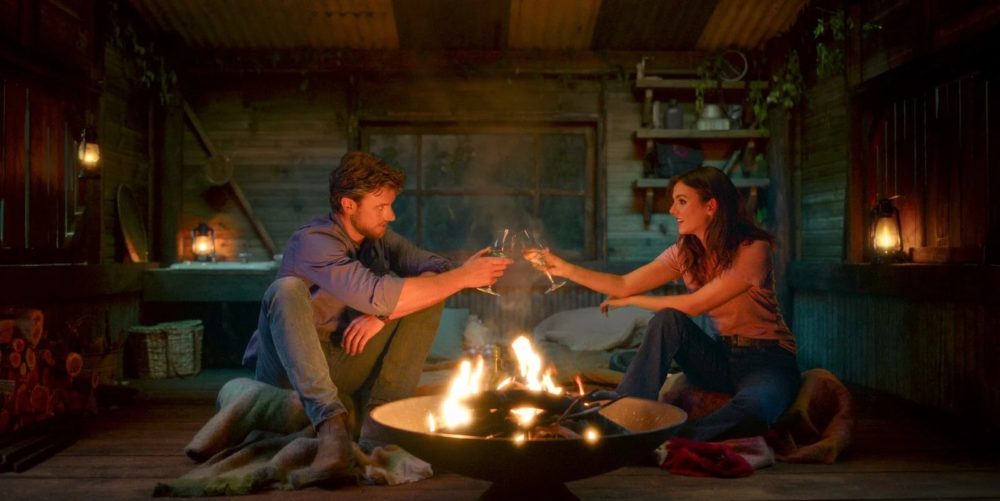
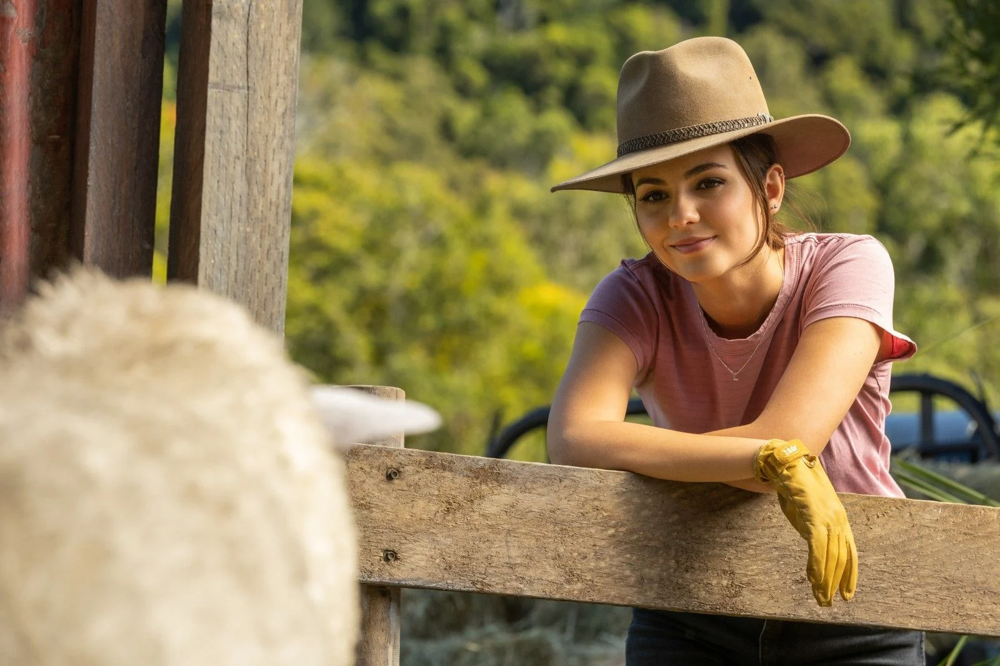
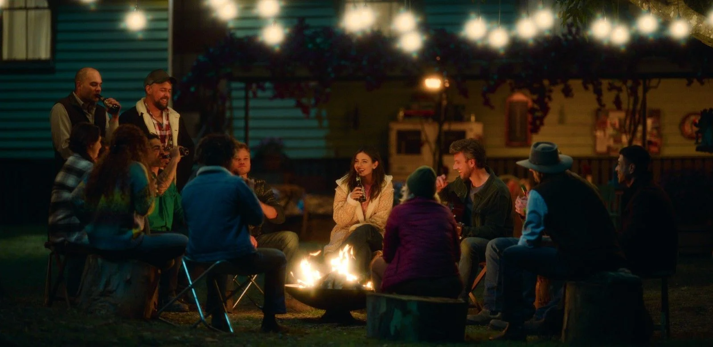
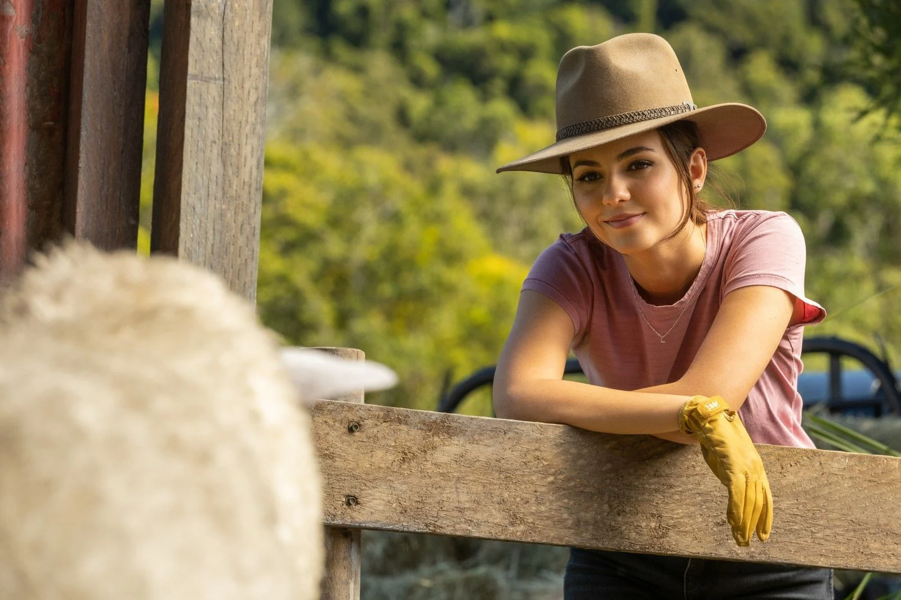
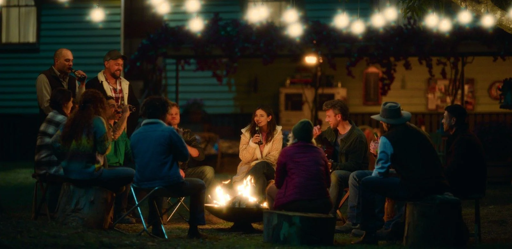

- Supervisão musical de Jess Moore, priorizando artistas australianos.
- Gravado em fazendas reais na Austrália.
- Apesar do cenário rural, Lola mantém estilo urbano, notado por críticos.
Críticas
Metacritic: 55/100
Rotten Tomatoes: Críticas apontam clichês, mas reconhecem leveza e charme.
Opiniões do Público
⭐ 3,0 — Inaví Fuscolin Corcini: "Mais um filme leve da Netflix, meloso, mas divertido. Nota: 6,5."
⭐ 3,5 — Elder Jhonatan: "Casal com química e fotografia bonita. Deixa o coração quentinho."
⭐ 1,0 — Crítica anônima: "Filme fraco, diálogos ruins e forçados. Perda de tempo."
 

 


